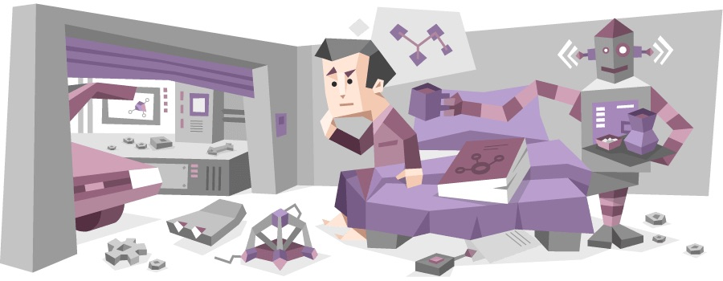

LÓGICA
- Se um trem parte de São Paulo às 10h em direção ao Rio de Janeiro e outro parte do Rio de Janeiro às 11h em direção a São Paulo, quando eles vão se encontrar?
- Na estação de rádio, onde a música é sempre boa
- No meio de uma discussão sobre quem chegou primeiro
- Em um restaurante de beira de estrada para um almoço improvável
- Nunca, eles são tímidos e têm medo de fazer amigos trens
- Se João come 12 bananas e Maria come 7 maçãs, o que é mais provável de acontecer?
- Eles abrirão uma loja de frutas juntos
- João terá cãibras nas mãos de tanto descascar bananas
- João vira uma banana gigante e Maria se transforma em uma maçaneta
- Todas as frutas da casa acabam
- Se um relógio quebrou duas vezes e voltou a funcionar, quantas vezes por dia ele vai acertar?
- Várias vezes, porque ele tem 12x60 tentativas
- Apenas uma vez, porque existem 12x60 alternativas
- Nenhuma, porque ele provavelmente está confuso sobre seu propósito na vida
- Todas as vezes, porque até mesmo um relógio quebrado está certo duas vezes por dia
- Qual é a próxima letra nesta sequência: A, E, I, O...?
- U, porque todas as vogais merecem uma chance
- P, porque as reticências são... uma Pausa dramática
- A, porque essa sequência, assim como todas as questões, só tem 4 letras
- R, porque todas as perguntas da prova até agora sempre terminaram em R
OUTRAS PROVAS